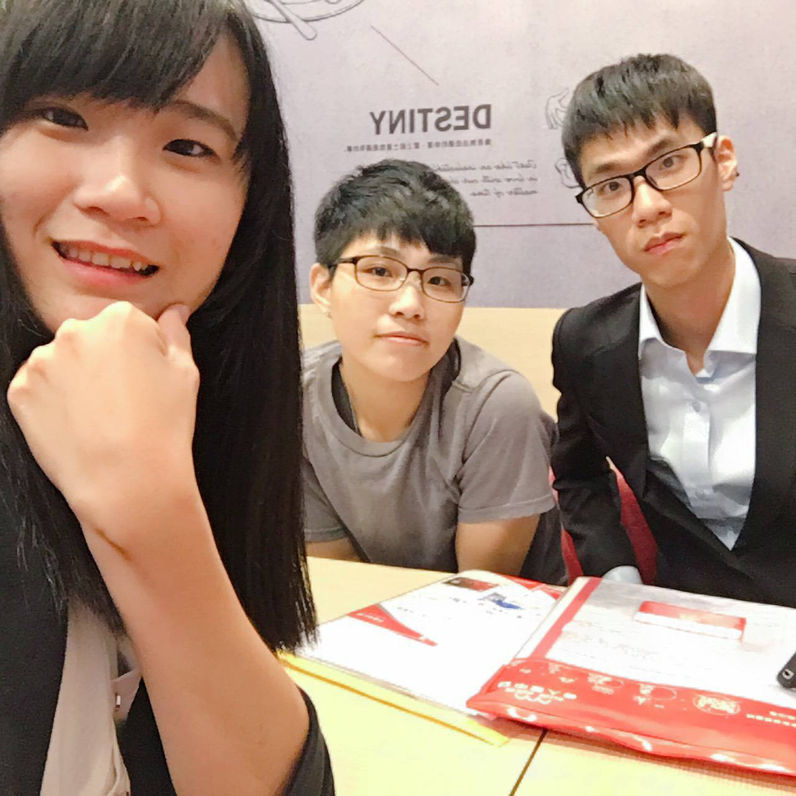
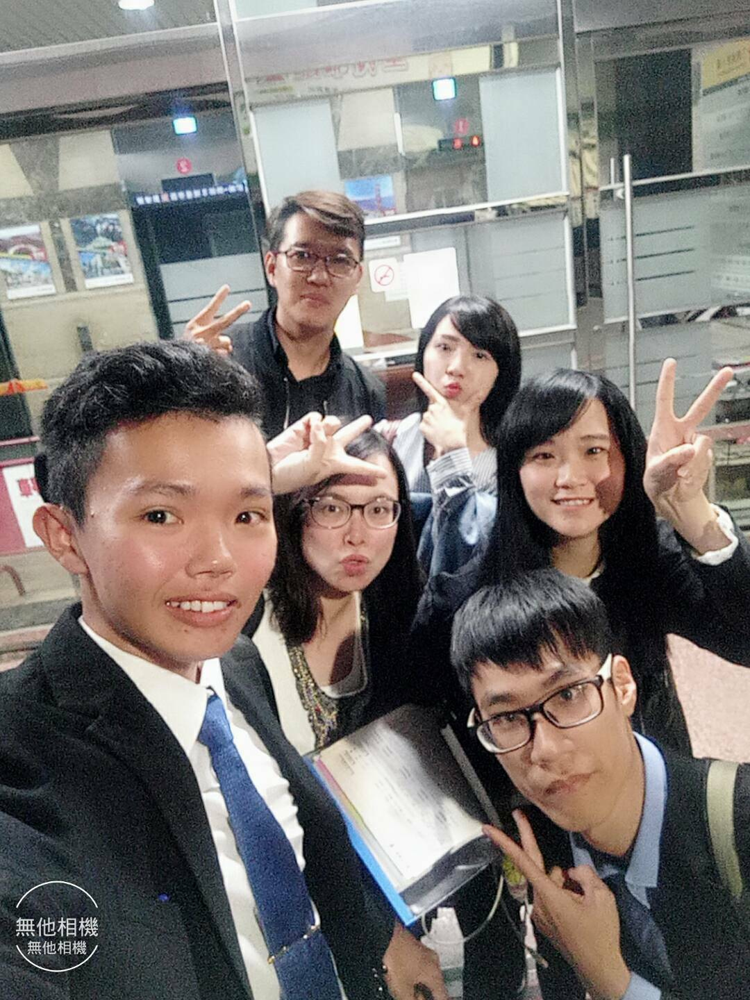
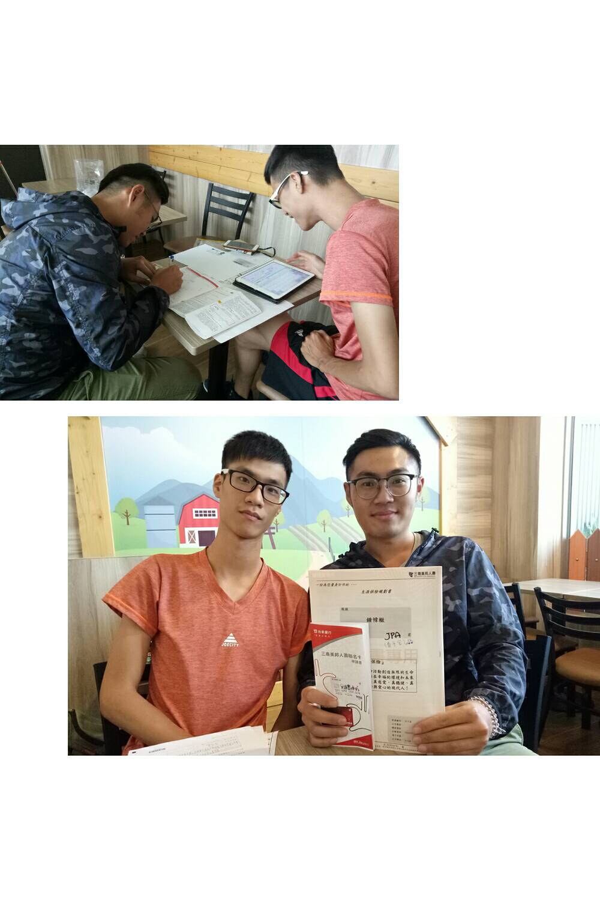
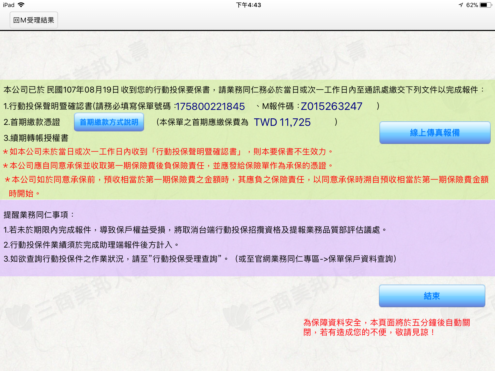
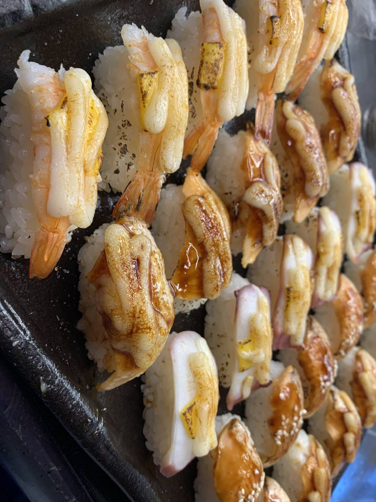
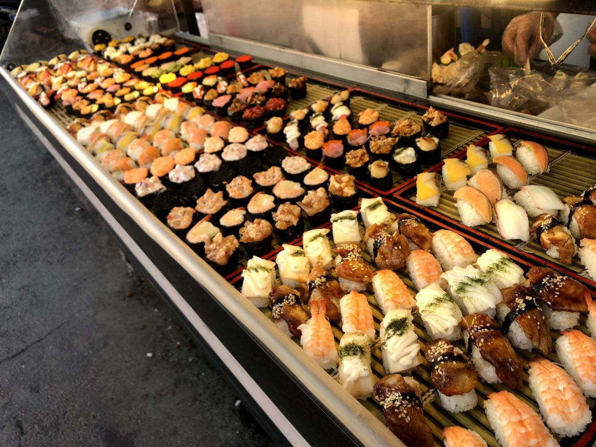
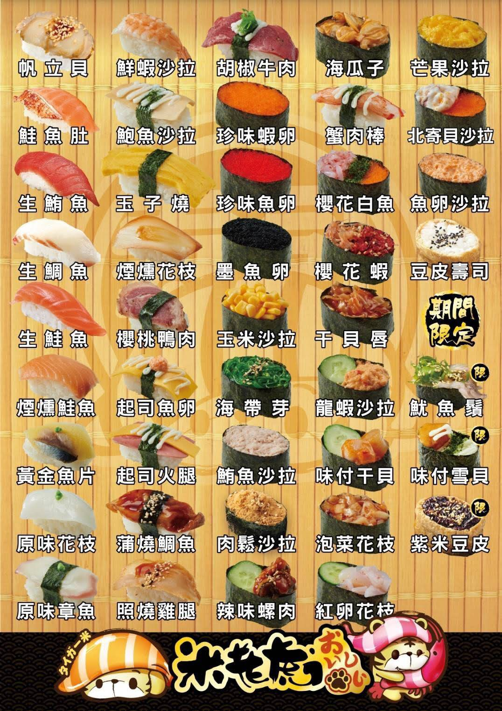

關於我
我是方唯愷，畢業於大葉大學財務金融學系。我深信「專業邏輯」與「執行效率」是職場的核心價值。透過財務金融的專業訓練，我具備嚴謹的數據敏感度與風險意識；在豐富的營運管理與組織行政經歷中，我展現了優異的協調溝通力與解決問題的實戰經驗。
學歷優勢：財務金融專業
大葉大學 - 財務金融學系
具備紮實的市場分析與財務邏輯基礎
邏輯思維與數據力
透過財務報表分析與投資組合訓練，建立起嚴謹的「成本效益觀點」，能快速從繁瑣數據中找出核心問題。
風險控管意識
專業背景使我面對營運變動時，能先一步評估風險並規劃替代方案，這在保險業務與店務管理中均獲得實證。
工作與組織經歷精華
財務金融系學會
幹部 — 秘書
- 行政與檔案管理：負責所有正式公文收發、會議記錄與活動檔案建檔。
- 溝通協調中樞：擔任系辦公室與學生間的正式溝通橋樑。
三商美邦人壽
保險業務人員 / 金融顧問
- 針對客戶進行專業風險評估，提供個人化保障規劃與財務諮詢服務。
- 協助客戶處理理賠申請，維持高度專業性與服務品質。
三商實務紀錄




烏弄原生茶飲
店務營運與人才培訓
負責新進員工訓練，確保各個環節符合品牌高標準服務品質；優化訂單排程，減少營運成本。
10元壽司店
高效率現場營運人員
在極高流速的環境下維持精確的訂單處理與出餐品質，展現卓越的應變與耐壓能力。
壽司店實務紀錄



核心能力
財務邏輯
預算規劃、風險分析
組織行政
檔案管理、溝通協調
營運管理
SOP執行、培訓能力